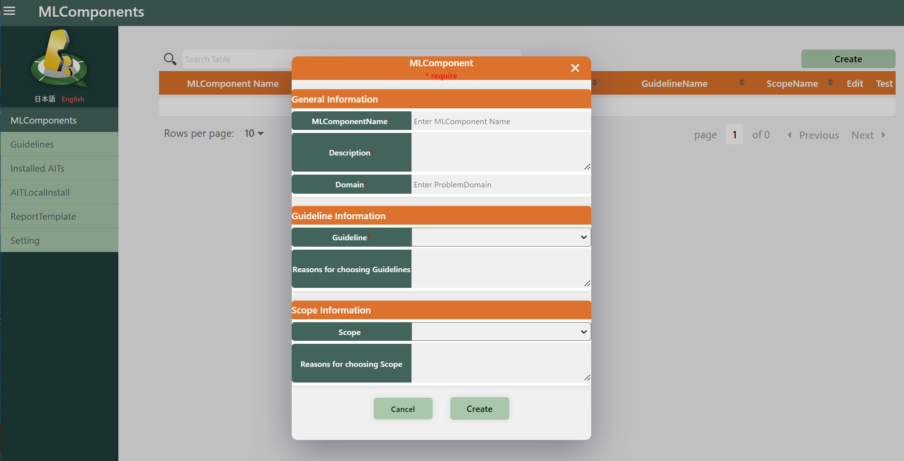
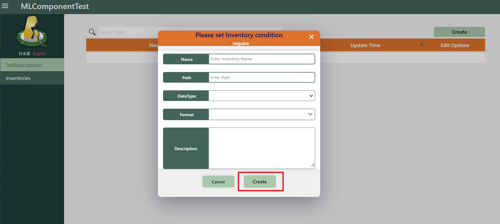
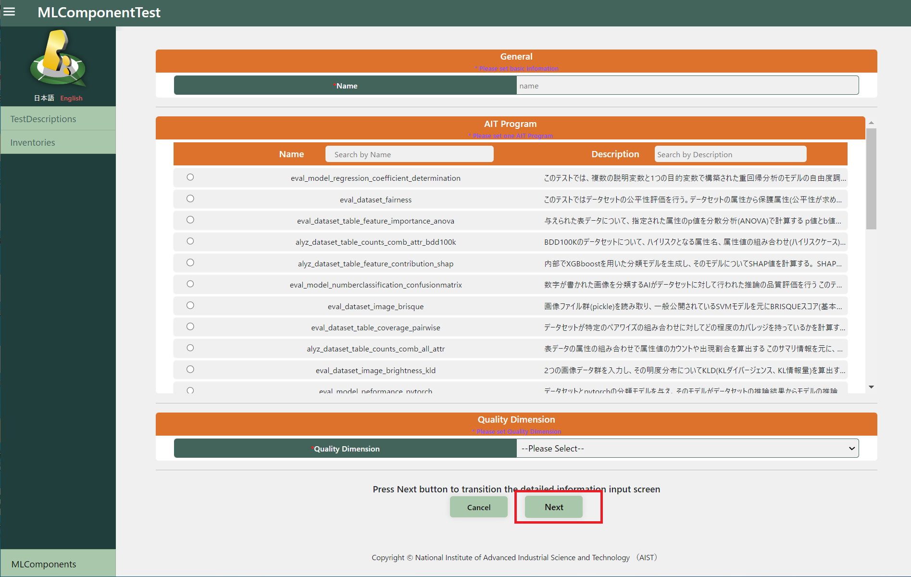
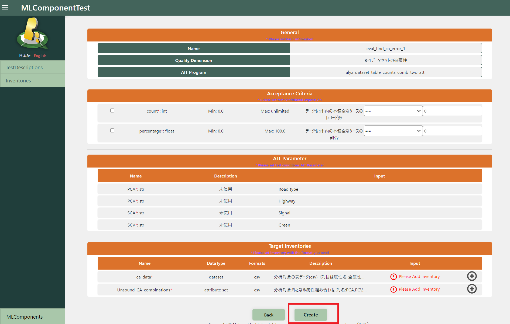
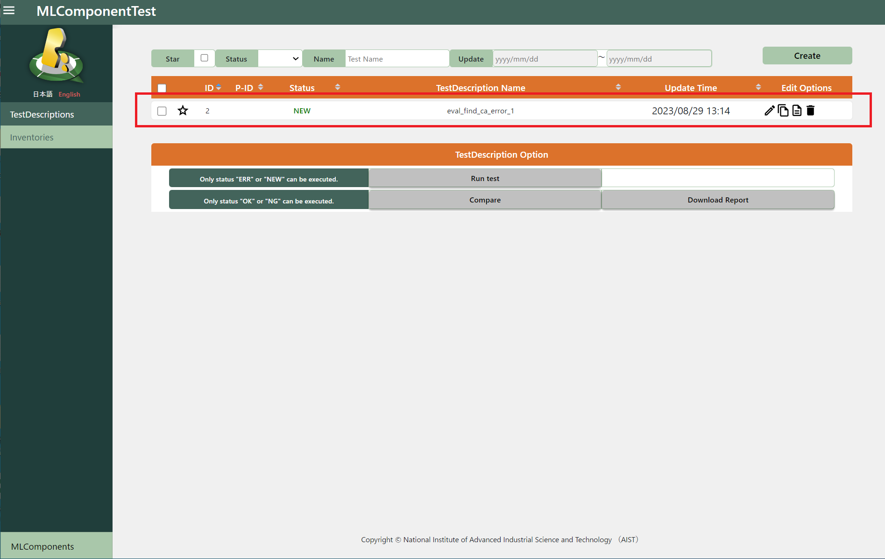
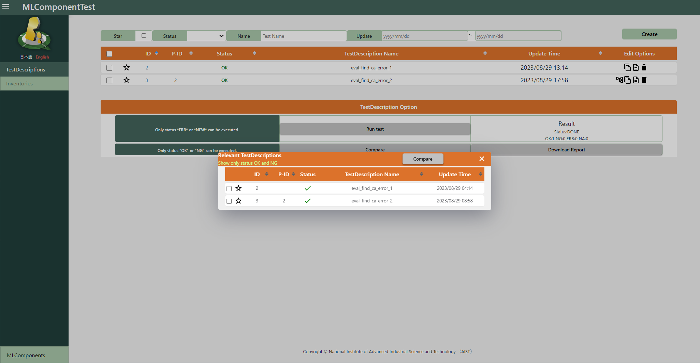
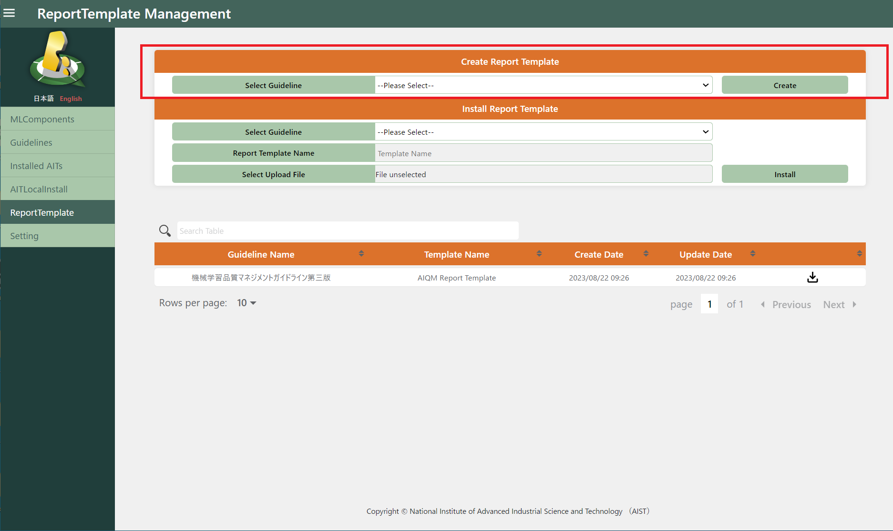
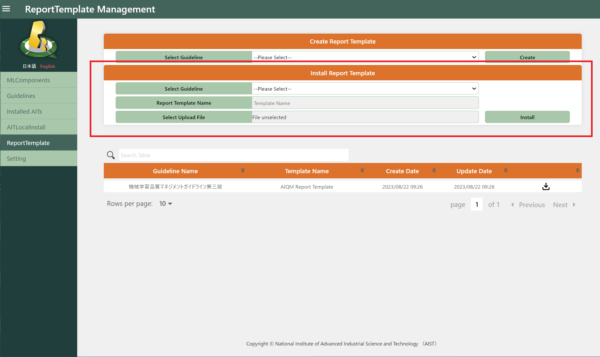

3.1. Execution of quality assessment¶
In this chapter, we will explain the steps to execute quality assessments for ML components using Qunomon.
The structure of this chapter is as follows: registering the MLComponent (the unit of asset under assessment), registering the TestDescription (the unit of evaluation in the system), executing the TestDescription, result confirmation, generating the test report.
3.1.1. Registering the MLComponent¶
In Qunomon, evaluations are conducted on a unit called MLComponent.
MLComponent is the type of components in the system, typically implements a single independent ML-related feature. MLComponent typically consists of one or more models and/or datasets.
To begin with, press the “Create” button in the MLComponents screen. Then the registration form for new MLComponent will appear.

Enter the necessary items in the MLComponent new creation screen and click the “Create” button.
Please fill the required fields below and press “Create” button.
MLComponentName: Name for the new MLComponent (should be easily distinguishable from others)
Description
Domain: Problem domain of this MLComponent (e.g. Task, Industrial Domain, Use Case, etc.)
Guideline: Choose the guideline/standard used and referred for your assessment
Scope: When selected guideline is using different set of quality characteristics for different scope, choose one which is appropriate for this MLComponent.

After this step, you can see the newly registered MLComponent in the MLComponents screen. From here, we will register asset to be evaluated into the inventory of this MLCompomnent, and then define the TestDescription for them.
Please click the icon shown on the “Test” column and move to the detailed-information screen for the MLComponent.

3.1.2. Register assets into inventories¶
Inventory is the feature to store the asset to be tested by Qunomon. The assets should be registered in the inventory may include ML models (architectures, trained-weights, hyperparameters) and/or datasets (such like tables, files or annotations).
Choose the “Inventories” under the submenu, and then press the “Create” button.

Please fill the required field below and press “Create” button.
Name: Name for the inventory (should be easily distinguishable from others.)
Path: Local file path pointed to the asset to be registered (Note that: In other words, the file to be registered and Qunomon must be the same file system.)
DataType: Choose one type that AIT requires as input.
Format: Choose appropriate file extension or input if the one is not listed.
Description

3.1.3. Register a new TestDescription¶
TestDescription is the smallest unit of the test, describes one executable evaluation specifications. In this section, we will define which AIT to be applied, which asset (in the iventory) is to be evaluated and execution parameters.
Please click the icon displayed on “Create” column and move to the TestDescription creation form.

Here is the basic information form for the TestDescription. Please fill in the required fields below and press the “Next” button.
Name: Identical name for the TestDescription
AIT Program: Choose one AIT (Executable Test Package) that is used for this test.
You can filter already installed AITs using some attributes like name and/or description.
Quality Dimension: Choose one quality characteristics which is evaluated by the AIT.
Quality dimensions listed here are extracted from guideline you have selected for this MLComponent. Since Qunomon will manage and organize assessment to correspond with quality characteristics defined in the guideline, you should choose appropriate quality dimension here.

Here is the detailed information form for the TestDescription. Please fill in the required fields below and press the “Create” button.
Acceptance Criteria: For each of the evaluation metrics of an AIT, please configure the acceptance criteria (condition).
All metrics to be generated by the AIT are listed here.
If all of the configured condition are met, the test treated as pass and otherwise the test fail.
So you should configure these condition referring the guideline, other documents, requirements for the component, and/or task characteristics.
AIT Parameter: These are the execution parameter of chosen AIT. Configure them based on the provided description.
Target Inventories: Please select inventories with assets to be tested or used in this TestDescription.
You can directly register an asset from “+” icon on this form.

After completing the registration, you can see the registered TestDescription in the list.

3.1.4. Executing TestDescription¶
Please select the TestDescription to be executed and press “Run test” to execute assessment.

After execution, the status field for the TestDescription will change according to the result.
OK: All Acceptance Criteria are met.
NG: Any of the Acceptance Criteria are not met.
ERR: An error is occured during the execution. Result will not be provided in this case.

There are various causes for ERR such like:
The AIT contained bugs.
The input data type (of asset in the inventory) did not match the expected format.
An resource shortage while executing the TestDescription.
[How to check the cause of the error]
(1) See the error detail in the detailed information screen of the TestDescription.
(2) Check the log file under the
qai-testbed\qunomon\logsdirectory.(3) Check the execution logs in the airflow (job management system).
access http://localhost:8180/home and check the execution log of an AIT which is corresponds to the TestDescription.（ID：airflow PASS：airflow）
3.1.5. Check Detailed Result of the TestDescription¶
Press the “Detail” icon of the executed TestDescription to confirm the assessment result.


(1) List of the test resource (Test results and supplementary information in image or graph format.)
(2) You can preview the selected resource in (1).
(3) You can choose which of the resources are included in the final assessment report.
(4) You should write an opinion about result after confirming the test results.

You can move to the download screen of the resource by pressing the “Download” in the side bar or “Click here to download the data” link text.

3.1.6. Download the test resource¶
You can download the test resources like images or graphs via download icon.

3.1.7. Copy existing TestDescription¶
You can register the copy of the TestDescription by pressing the “copy” icon. This may be useful for re-executing the failed test case and/or conducting same test against multiple inventories.
Configuration items are basically same as creating new one. Fill the form and press the “Create” button.

Copied TestDescription can be seen in the list.
After excuting the copied TestDescription, you can see the icon in the “relationship” column. Press the icon to see the relationships between copy source and copy destination.

3.1.8. Compare the TestDescriptions¶
You can compare execution results of similar TestDescriptions by choosing two TestDescriptions with parent-child relationship and press the “Compare” button. This might be useful to copmpare the models with different architecture, or different versions.


You can compare the test resources from each of the TestDescription side by side by choosing one from the list.
3.1.9. Report Generation¶
Qunomon manages and organized the TestDescriptions along with quality characteristic defined in the guideline/standard. In this section, we explain how to generate an assessment report as PDF which is compliant to the guideline.
You can see the Report Geenration dialogue with clicking “Download Report” button after choosing the TestDescriptions to be included in the assessment report.

Press the “Preview” button after choosing appropriate template will display the preview of the report to be generated. You can create or register new report template by yourself while the template for the AI Quality Management GUideline is included in the Qunomon from beginning.
If you don’t have any template for the guideline/standard, you can also choose “Do not use ReportTemplate” so that the report with basic feature (but may not be well structured) can be generated.

Review the contents through preview and then describe the general comment in the “Report Opinion” textbox. “Create” button generates the report in the PDF format and download will be automatically started.
3.1.10. Register new Report Template (optional)¶
As we said previously, we can author and register the original report template. There are two ways to create new report template: (1) Generate report template automatically from registered guideline/standards, and (2) Manually writes template from scratch.
3.1.10.1. Create the new Report Template¶
3.1.10.1.1. Generate Report Template from the registered guideline¶
Choose desired guideline in the “Create Report Template” part of the ReportTemplate screen and press the “Create” button.
3.1.10.1.2. Manually writes template from scratch¶
The example of the template are placed under qunomon\src\backend\report\templates\1. Please copy and edit them. To register template, you need to zip the entire directory. Our templates are based on Jinja Framework, so the author should learn how to use Jinja Framework.

3.1.10.2. Register an Report Template¶
Choose guideline correspond to the template to be registered at the “Install Report Template” part of the ReportTemplate screen, name the template and upload zipped template folder from Select Upload File inputbox.
Please press the “install” button and then report template will be registered into Qunomon.
